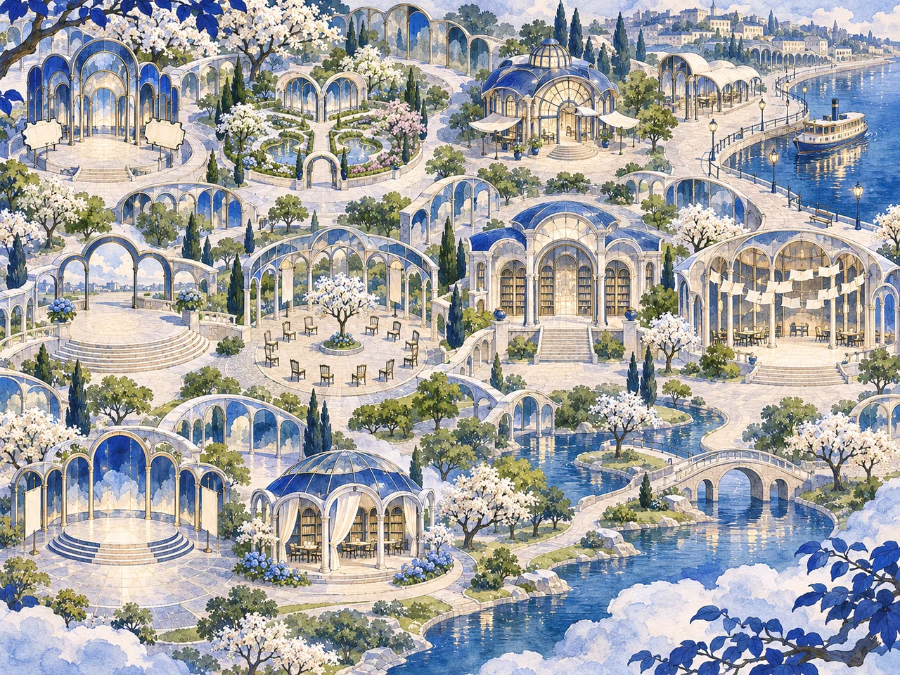
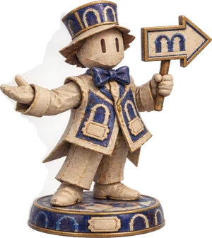

Музей ненаступившего завтра
Карты и фигурки ведущего
Игровой комплект
3 игрока · 4 игрока · 5 игроков · 6 игроков · 7 игроков
Карта кампании

Поля боя


Герои


Персонажи ведущего


Противники


Бумажный смотритель 1Бумажный смотритель 3Бумажный смотритель 2Бумажный смотритель 5Бумажный смотритель 4Сценический исполнитель 5Сценический исполнитель 1Сценический исполнитель 2Сценический исполнитель 4Сценический исполнитель 3
 Медная тележка 4Медная тележка 5Медная тележка 1Медная тележка 3Медная тележка 2
Медная тележка 4Медная тележка 5Медная тележка 1Медная тележка 3Медная тележка 2